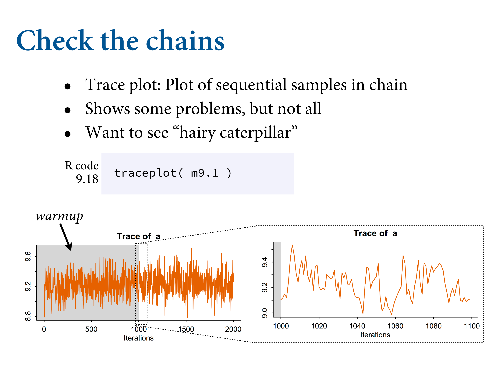

9.4 Easy HMC: ulam
- Preprocess any variable transformations
- Construct a clean data list with only the variables you will use.
data(rugged, package = "rethinking")
d <- rugged
rm(rugged)
d <-
d %>%
mutate(log_gdp = log(rgdppc_2000))
dd <-
d %>%
drop_na(rgdppc_2000) %>%
mutate(log_gdp_std = log_gdp / mean(log_gdp),
rugged_std = rugged / max(rugged),
cid = ifelse(cont_africa == 1, "1", "2")) %>%
mutate(rugged_std_c = rugged_std - mean(rugged_std))
Run quap as before. Now let’s do this with a MC.
9.4.1. Preparation

Same formula, but slim dataset with just the variables of interest. 4 chains on separate cores.
9.4.2. Sampling from the posterior
b9.1 <-
brm(data = dd,
family = gaussian,
bf(log_gdp_std ~ 0 + a + b * (rugged_std - 0.215),
a ~ 0 + cid,
b ~ 0 + cid,
nl = TRUE),
prior = c(prior(normal(1, 0.1), class = b, coef = cid1, nlpar = a),
prior(normal(1, 0.1), class = b, coef = cid2, nlpar = a),
prior(normal(0, 0.3), class = b, coef = cid1, nlpar = b),
prior(normal(0, 0.3), class = b, coef = cid2, nlpar = b),
prior(exponential(1), class = sigma)),
chains = 1, cores = 1,
seed = 9,
file = "fits/b09.01")print(b9.1)## Family: gaussian
## Links: mu = identity; sigma = identity
## Formula: log_gdp_std ~ 0 + a + b * (rugged_std - 0.215)
## a ~ 0 + cid
## b ~ 0 + cid
## Data: dd (Number of observations: 170)
## Samples: 1 chains, each with iter = 2000; warmup = 1000; thin = 1;
## total post-warmup samples = 1000
##
## Population-Level Effects:
## Estimate Est.Error l-95% CI u-95% CI Rhat Bulk_ESS Tail_ESS
## a_cid1 0.89 0.02 0.86 0.92 1.00 1114 721
## a_cid2 1.05 0.01 1.03 1.07 1.00 1106 658
## b_cid1 0.13 0.08 -0.01 0.29 1.00 1015 773
## b_cid2 -0.14 0.06 -0.26 -0.03 1.01 1241 712
##
## Family Specific Parameters:
## Estimate Est.Error l-95% CI u-95% CI Rhat Bulk_ESS Tail_ESS
## sigma 0.11 0.01 0.10 0.13 1.00 997 720
##
## Samples were drawn using sampling(NUTS). For each parameter, Bulk_ESS
## and Tail_ESS are effective sample size measures, and Rhat is the potential
## scale reduction factor on split chains (at convergence, Rhat = 1).
ulam translates this into raw Stan code. A bunch of formal variable definitions.
What happens here is it reports each chain. Warmup figures out the step size. Total samples is the length of each chain minus the warmup. You won’t need more than a couple of thousand samples to get a good estimate.
n_eff is the number of effective samples. Note that it’s greater than the number of samples from the MC. True because it takes dispersed samples. The number of samples you would get if there was no auto-correlation between sequential samples. Rhat is the Gelman-Ruben diagnostic. You want it to converge across chains. They should all look the same and be exchangeable.
post <- brms::posterior_samples(b9.1)
post %>%
pivot_longer(-lp__) %>%
group_by(name) %>%
mean_hdi(value, .width = .89) # note our rare use of 89% intervals## # A tibble: 5 × 7
## name value .lower .upper .width .point .interval
## <chr> <dbl> <dbl> <dbl> <dbl> <chr> <chr>
## 1 b_a_cid1 0.887 0.858 0.910 0.89 mean hdi
## 2 b_a_cid2 1.05 1.03 1.07 0.89 mean hdi
## 3 b_b_cid1 0.132 0.0101 0.245 0.89 mean hdi
## 4 b_b_cid2 -0.144 -0.228 -0.0505 0.89 mean hdi
## 5 sigma 0.112 0.102 0.123 0.89 mean hdi9.4.3. Sampling again, in parallel
b9.1b <-
brm(data = dd,
family = gaussian,
bf(log_gdp_std ~ 0 + a + b * (rugged_std - 0.215),
a ~ 0 + cid,
b ~ 0 + cid,
nl = TRUE),
prior = c(prior(normal(1, 0.1), class = b, coef = cid1, nlpar = a),
prior(normal(1, 0.1), class = b, coef = cid2, nlpar = a),
prior(normal(0, 0.3), class = b, coef = cid1, nlpar = b),
prior(normal(0, 0.3), class = b, coef = cid2, nlpar = b),
prior(exponential(1), class = sigma)),
chains = 4, cores = 4,
seed = 9,
file = "fits/b09.01b")print(b9.1b)## Family: gaussian
## Links: mu = identity; sigma = identity
## Formula: log_gdp_std ~ 0 + a + b * (rugged_std - 0.215)
## a ~ 0 + cid
## b ~ 0 + cid
## Data: dd (Number of observations: 170)
## Samples: 4 chains, each with iter = 2000; warmup = 1000; thin = 1;
## total post-warmup samples = 4000
##
## Population-Level Effects:
## Estimate Est.Error l-95% CI u-95% CI Rhat Bulk_ESS Tail_ESS
## a_cid1 0.89 0.02 0.86 0.92 1.00 4613 2993
## a_cid2 1.05 0.01 1.03 1.07 1.00 4782 3058
## b_cid1 0.13 0.07 -0.01 0.28 1.00 4397 2724
## b_cid2 -0.14 0.06 -0.25 -0.03 1.00 5029 3104
##
## Family Specific Parameters:
## Estimate Est.Error l-95% CI u-95% CI Rhat Bulk_ESS Tail_ESS
## sigma 0.11 0.01 0.10 0.12 1.00 4693 3152
##
## Samples were drawn using sampling(NUTS). For each parameter, Bulk_ESS
## and Tail_ESS are effective sample size measures, and Rhat is the potential
## scale reduction factor on split chains (at convergence, Rhat = 1).Look at the formula and prior
b9.1b$formula## log_gdp_std ~ 0 + a + b * (rugged_std - 0.215)
## a ~ 0 + cid
## b ~ 0 + cidb9.1b$prior## prior class coef group resp dpar nlpar bound source
## (flat) b a default
## normal(1, 0.1) b cid1 a user
## normal(1, 0.1) b cid2 a user
## (flat) b b default
## normal(0, 0.3) b cid1 b user
## normal(0, 0.3) b cid2 b user
## exponential(1) sigma userprior_summary(b9.1b)## prior class coef group resp dpar nlpar bound source
## (flat) b a default
## normal(1, 0.1) b cid1 a user
## normal(1, 0.1) b cid2 a user
## (flat) b b default
## normal(0, 0.3) b cid1 b user
## normal(0, 0.3) b cid2 b user
## exponential(1) sigma userIf there were only 2000 samples in total, how can we have more than 2000 effective samples for each parameter? It’s no mistake. The adaptive sampler that Stan uses is so good, it can actually produce sequential samples that are better than uncorrelated. They are anti-correlated. This means it can explore the posterior distribution so efficiently that it can beat random.
9.4.4. Visualization

pairs(b9.1b,
off_diag_args = list(size = 1/5, alpha = 1/5))
vcov(b9.1b, correlation = T) %>% round(digits = 2)## a_cid1 a_cid2 b_cid1 b_cid2
## a_cid1 1.00 -0.03 0.17 0.05
## a_cid2 -0.03 1.00 0.01 -0.09
## b_cid1 0.17 0.01 1.00 -0.03
## b_cid2 0.05 -0.09 -0.03 1.00post <- posterior_samples(b9.1b)
glimpse(post)## Rows: 4,000
## Columns: 6
## $ b_a_cid1 <dbl> 0.9064987, 0.8718809, 0.9012252, 0.8977892, 0.8703916, 0.9253…
## $ b_a_cid2 <dbl> 1.050241, 1.060212, 1.044918, 1.047780, 1.041505, 1.035713, 1…
## $ b_b_cid1 <dbl> 0.05395168, 0.17354574, 0.10481150, 0.12121863, 0.24473996, 0…
## $ b_b_cid2 <dbl> -0.12886759, -0.12364289, -0.19158438, -0.18779887, -0.177450…
## $ sigma <dbl> 0.11045080, 0.11337407, 0.10222348, 0.10314139, 0.09620476, 0…
## $ lp__ <dbl> 133.1505, 133.4317, 132.5007, 133.3072, 128.2402, 129.3591, 1…post %>%
dplyr::select(-lp__ ) %>%
GGally::ggpairs()
9.4.5. Checking the chain


plot(b9.1b)library(bayesplot)
post <- brms::posterior_samples(b9.1b, add_chain = T)
bayesplot::mcmc_trace(post[, c(1:5, 7)], # we need to include column 7 because it contains the chain info
facet_args = list(ncol = 3),
size = .15) +
scale_color_pomological() +
labs(title = "My custom trace plots") +
theme_pomological_fancy(base_family = "Marck Script") +
theme(legend.position = c(.95, .2))post %>%
bayesplot::mcmc_rank_overlay(pars = vars(b_a_cid1:sigma)) +
scale_color_pomological() +
ggtitle("My custom trank plots") +
coord_cartesian(ylim = c(25, NA)) +
theme_pomological_fancy(base_family = "Marck Script") +
theme(legend.position = c(.95, .2))## Scale for 'colour' is already present. Adding another scale for 'colour',
## which will replace the existing scale.## Warning: Font 'Marck Script' isn't in the extrafont font list (but it may still
## work). If recently installed, you can try running `extrafont::font_import()`. To
## install, visit: https://fonts.google.com/specimen/Marck+Script/
What you want to see are these hairy caterpillars.
Now, how is this chain a healthy one? Typically we look for three things in these trace plots: (1) stationarity, (2) good mixing, and (3) convergence.